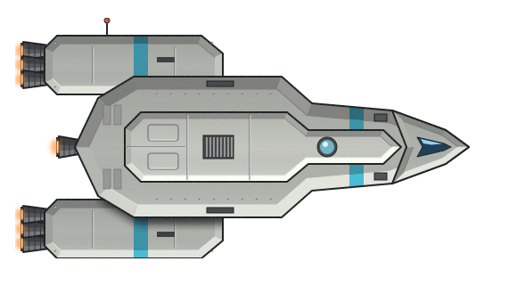

Infall: Escape The Collapse
Game Design Document
Work in progress. This document records design decisions as they are made. Sections marked
Open have not been discussed yet; nothing in them is final.
This file mirrors the shared, co-editable copy at claude.ai/artifact/DNRJEFZkzS4zBL1nPHoLmX; that copy is updated on request.
1. Overview
A: Decided A roguelike in the vein of FTL: ships made of rooms, tiles and systems; jumping from star system to star system; events and real-time combat.
B: Decided The galaxy core has collapsed into a super black hole. The player leads a small squad of scout ships toward the far rim of the galaxy and must find a way, possibly a technology, to jump to a new galaxy.
C: Decided FTL is treated as a genre: mechanics work exactly as in FTL unless a decision here says otherwise (e.g. firing, then checking for a miss against engines/evasion or a block by shields). Content differs: weapons, systems and races get their own names and may get new behaviour (e.g. a dual laser that can target two different rooms) when we decide so.
D: Decided The player's ships are scout ships flying ahead of a giant colony ship carrying the last survivors of their home planet. The scouts scout and map the way for it and stay in communication with it. It is not a few crew on one ship leaving to save their race.
E: Likely The colony ship is not shown on the map; it is simply "behind you".
F: Decided A run is lost when all scout ships are gone.
G: Likely The colony ship is a layer on top of the FTL-like game and isn't a focus yet. The first build has almost no interaction with it, so the basics can be made to work first. Whether it exists in play at all is undecided.
H: Decided The core loop is the same as FTL's. More ships are an extension of FTL's loop of gaining systems and weapons.
I: Ai-Generated-Proposal Ship loss. In FTL you can always recover fully (hull, systems, breaches, missiles, drone parts) until you lose the game. Losing one ship of a squad is a major setback FTL has no equivalent of. A destroyed ship is gone, with its systems and weapons, but the loss is softened so it stays attrition rather than an instant run-ender:
- Escape pods, only if an Escape Pods ship system is added: when a ship with the system reaches 0 hull, its surviving crew escape to squad-mates with free crew space; crew who don't fit are lost. Without the system, the crew are lost with the ship, as in FTL. Crew already on board an enemy ship stay there and can be teleported or walked home as usual.
- Salvage your own wreck: if the squad wins the battle, the lost ship's wreck is converted like any other wreckage (8C), giving about a quarter of its value in Mawjig, enough to help buy or repair, never enough to replace it.
- Replacements come the same way as extra ships (1H): events, stores and races that will sell or give a ship.
J: Likely Tone varies by race, region, cluster, situation and proximity to the collapse; e.g. one race or region grim and dark, another optimistic until it becomes impossible, another strange and bizarre. Event tone, and to a degree art, follows. The overall tone is a mix of despair, confusion and hope.
K: Likely Classic settings. Almost everything that deviates significantly from FTL’s gameplay will eventually have a setting that makes it similar to FTL. The setting does not name FTL; it is simply called “Classic”.
- Proposed Possible examples: all ships have power levels and no conduits; Solo Run (no squads); Classic Weapon Balance.
- Unlikely Example: Scrap and Fuel instead of Mawjig.
Key differences from FTL
- A squad of 1–6 player ships instead of a single ship.
- Combat is squad against squad, with up to 6 enemy vessels.
- An expanding collapse replaces the pursuing rebel fleet; escaping the galaxy replaces the flagship battle.
- Built for multiplayer, up to one player per ship.
2. The Collapse & Campaign Structure
A: Decided The collapse horizon expands outward over the run.
B: Proposed Event themes depend on distance from the horizon: close to it, events reflect the shock of the collapse and people scrambling to leave their planets; far from it, distant worlds may not yet believe the collapse is real.
C: Likely The map is one open, galaxy-shaped node map rather than FTL-style sectors. It is built from regions (see 2J), each with its own generation rules, e.g. a race's territory that sprawls, or a field of dead stars or other anomalies. Difficulty rises with distance from the core. Fallback: themed sectors with a wide star map between them.
D: Likely Map zoom is clamped fairly tight by default so players aren't overwhelmed; a setting unclamps it (e.g.
Map Zoom: Clamped > Free).E: Proposed Sensor level sets how far away beacons are visible, as unlabeled beacons like FTL's, so upgraded sensors allow longer-range planning.
F: Decided No area is ever a dead end: every node links to at least one node farther from the core.
G: Likely A run goes through these stages:
- Fairly easy encounters and events for learning the controls and play, with hints of other things that could be encountered.
- Building up and collecting some power.
- Running into challenges and needing to adapt your build.
- Harder challenges, needing to commit to a build or have a good one.
- Acquiring the means (tech, alliances, exploration…) to jump to another galaxy soon.
- The final stretch: challenged, and fighting others desperate to escape and survive.
- The final encounter with the big rival who wants your escape route for themselves.
H: Likely Stages are somewhat flexible bands of difficulty by distance from the core, hidden from the player.
I: Proposed Multiple victory paths, like Civilization's win conditions (see the ideas document).
J: Decided Map terms: each node, and each jump, is a star cluster. Which of its stars are inhabited is abstracted; on the map a node is drawn as a group of dots rather than one. Several related clusters form a region, e.g. a civilization's territory. "System" is kept for ship systems only.
K: Decided Each region has deep/core, inner and border clusters (deep/core < inner < border), with possible unclaimed or neutral clusters between regions.
Likely If a core cluster somehow becomes a border cluster later, it still remains a core cluster, like a homeworld or major colony now suddenly threatened.
Likely If a core cluster somehow becomes a border cluster later, it still remains a core cluster, like a homeworld or major colony now suddenly threatened.
L: Likely Clusters are not static. A cluster can change state during a run, e.g. Border, Refugee, Occupied, Abandoned, Swallowed. These are potential states, not a fixed sequence: which ones happen depends on the races involved, the situation, proximity to the collapse and other factors. More states can be added.
M: Likely Procedural generation places region types and races in different parts of the galaxy each run.
N: Likely A race's behaviour is the same every run; its strength comes from where it is placed. Near the core it fields small, lightly armed squads and reaches its doom stage quickly; far out it fields larger squads with more weapons and more advanced designs, and a player well ahead of the collapse can meet it at its peak.
O: Likely Run length is about FTL's: about 8 difficulty bands, each about 10 clusters deep, with some grinding expected rather than rushing straight through.
P: Likely The collapse begins over about 5 jumps, each an ordinary event or encounter plus a message:
- Start: your race has sensed the collapse coming, or its astronomers have detected something wrong in the core, and has sent out its colony ship with you as the scouts.
- Unusual radiation is emanating from the core.
- The core is visibly brighter than it has ever been; communication with regions closer to the core is interrupted.
- The core has gone dark; jumps detected heading away from the core have increased tenfold.
- Entire regions are being swallowed: the galaxy core has collapsed into a super black hole. The collapse is now visible on the map, and clusters that looked reachable a few jumps inward are swallowed all at once.
Q: Likely From then on, the collapse expands about one jump's distance each time the player jumps, like FTL's rebel fleet; on the open map it is a ring growing outward from the core.
R: Decided What each cluster state (2L) changes. A state changes who you meet, what the store has and which events appear; the map shows it, so the player can plan around it.
Doing Fine, Struggling and Doomed are the owning race's state at this cluster, not across its whole region: e.g. the Tentauri can be Doomed at a small cluster next to the collapse and Doing Fine at another 2 bands away. Border clusters (2K) are a region's front lines. When a front moves, the state and the rank change together (except core clusters, 2K): e.g. an inner cluster becomes a Border once the clusters beyond it fall.
(Note) A cluster that touches only clusters of its own race and a neutral or Abandoned cluster is most likely still a Border cluster, unless the abandoned cluster or region is fully enveloped by that race.
Likely A cluster can have more than one state at once, e.g. Core, Border, At War, Refugee, Doomed, Occupied: Mecha.
Proposed Some states may cancel others, e.g. a non-core Occupied cluster that is no longer a Border probably loses At War; more generally, any cluster that is not a Border probably loses At War.
| State | Means | In play |
|---|---|---|
| Doing Fine | The owning race at this cluster is far from the collapse and not losing a war. | The race's usual ships, store and events; the race profile's Doing fine point. |
| Struggling Likely | Probably within the same band as the collapse; more likely as the collapse gets closer, especially when hit by war, occupation or refugees. Some races would rather flee the collapse and occupy as they go than become refugees. It can also happen away from the collapse: e.g. a peaceful race's cluster that touches only one cluster of its own region and 3 of an aggressive race is likely Struggling and likely At War. | The race profile's Struggling point. |
| Doomed Likely | One jump from the collapse, maybe up to 2–3. Everyone here knows that if they don't leave now they will die, and everyone who could leave probably already has. | The race profile's Doomed point. |
| Core Proposed | A cluster deep in a race's region (deep/core, 2K), such as a homeworld or major colony. It stays Core even if it becomes a Border. | Open |
| Border | A front line between two regions, or a region and pirates. | More fights, ships of both sides, fewer stores; hiding criminals (e.g. in Mecha borders). |
| At War Proposed | A Border cluster at war with another Border cluster. | Open |
| Refugee | Fleeing people have gathered or are passing through. | Recruitable crew and ships of the fleeing race; stores short of stock; events asking for help, fuel or escort. |
| Occupied | Taken by another race. | The occupier's ships; the original race appears as resistance, prisoners or refugees. Proposed Stores can be from either side: the occupier's are low on stock, the original race's nearly barren. You may meet beggars of the original race, empty stores, or stations needing help that offer trades instead of the usual goods for sale. |
| Abandoned | Left empty. | No store; derelicts and wreckage to salvage for Mawjig; scavengers, pirates and Malphen move in. |
| Swallowed | Inside the collapse horizon. | Unreachable, except for the ??? victory path (ideas). |
(Note) A cluster that touches only clusters of its own race and a neutral or Abandoned cluster is most likely still a Border cluster, unless the abandoned cluster or region is fully enveloped by that race.
Likely A cluster can have more than one state at once, e.g. Core, Border, At War, Refugee, Doomed, Occupied: Mecha.
Proposed Some states may cancel others, e.g. a non-core Occupied cluster that is no longer a Border probably loses At War; more generally, any cluster that is not a Border probably loses At War.
3. Squad Combat
A: Likely Player squad on the bottom half of the screen, enemy squad on the top half.
B: Proposed Selecting a ship shows its power levels and systems near that ship, rather than in fixed screen positions, since there are several ships on screen.
C: Decided The battle camera pans and zooms. Ship size (tiles and rooms) is not reduced to fit the screen; zoomed all the way out, both squads are visible as an overview, and the camera zooms in for room-level work.
D: Likely Combat plays much like FTL. Ships have as many systems, rooms and tiles as FTL ships, or more, and are the same size or bigger.
E: Decided Combat is designed as real time, running on fixed simulation ticks. Every action (charging, repairing, moving crew) takes a number of ticks.
F: Decided Turn mode is only an automatic pause every N ticks (see 4I). No system or AI is aware that turns exist.
G: Proposed Balance assumes a certain squad size, weapon count and gear at each point in a run. Encounters grow stronger toward the rim: only the most powerful factions, and those who band together, are making it that far.
H: Likely Default squad formation is a gentle curve (mockup MU2): the outer ships forward, the centre ships back, noses lined up along the curve, with some vertical overlap between neighbours. Each squad's front faces the divider. Curve depth about 0.7 ship lengths, with about 35% more horizontal space between ships than the first mockups. Other depths (0.2–1.0) and inverted curves (centre forward) were also mocked up.
I: Proposed Optional squad formation settings, e.g. curve depth, inverted curve, or interlaced rows (mockup MU1).
J: Likely The game targets a 16:9 screen; the battle is laid out wide, with space reserved at the top and bottom of the screen for GUI.
K: Likely A run starts with one scout ship. A winning squad is roughly 3–4 very strong ships or 6 good ones.
L: Likely Any ship can target any enemy ship.
M: Likely As in FTL, combat has no movement or positioning; a ship's place in the formation doesn't change what it can hit or be hit by. (Exception: EVA crossing time between ships, if that idea is used.)
N: Proposed A ship can only protect a squad-mate through systems, e.g. drones or a shield beam projected onto another ship.
O: Likely Battles have a Hail button, so the player can ask for or offer surrender early, or use other such options.
4. Multiplayer
A: Likely Additional players join via a second controller or over LAN, up to 6 players.
Proposed LAN with direct IP connect is enough for now; Steam joining may be added later.
Proposed LAN with direct IP connect is enough for now; Steam joining may be added later.
B: Decided The Captain is the host. In the standard mode the squad is the Captain's: they own and decide everything (ships, crew, resources, settings) at all times.
C: Decided A joining player starts as a spectating Commander until the Captain assigns them ships and/or individual crew members, which they can then command.
D: Decided All ships start assigned to the Captain until the Captain assigns them to someone else. A player whose ship is destroyed returns to being a Commander until reassigned.
E: Decided Resources (scrap, fuel, missiles, drone parts) are one shared squad pool.
F: Decided Players can drop in and out at any time. The game remembers each player's previous assignment so the Captain can quickly restore it.
G: Decided Only the Captain changes multiplayer settings, before the run or while paused.
H: Decided Pause Control setting (default first):
| Option | Behaviour |
|---|---|
| Captain (default) | Only the Captain can pause and unpause, at any time. |
| All | Pausing sends a vote; the game pauses only when every player has voted. Unpausing works the same way. |
| Majority | As All, but needs more than 50% of players. |
| Any | Any player can pause or unpause for everyone at any time. |
I: Decided Turn Mode settings (default first):
| Setting | Values |
|---|---|
| Auto Pause | Off (default) / On |
| Auto Pause Interval | Stored in ticks, shown to players in seconds |
| Require "Send Commands" | Off (default) / On. Each player locks in their commands; play resumes until the next auto pause once all players are locked in. A player can cancel to un-lock. |
| Allow pausing between auto pauses | On (default) / Off |
J: Decided Disconnected players drop out of vote and lock-in counts, and the Captain can override a stalled vote.
K: Decided Events auto-pause the game by default; each event type's auto pause can be toggled off.
L: Decided An indicator shows who paused, and in vote or lock-in modes who has voted or locked in so far. Its placement is part of the GUI discussion (section 14).
M: Decided Event Choices setting, for events with options:
| Option | Behaviour |
|---|---|
| Captain Makes Final Decision (default) | The Captain chooses; players may vote and the Captain sees their votes. |
| Vote Determines Choice | The players' vote picks the outcome. |
| Captain Has Larger Vote | Weighted vote, with the Captain's vote counting for more. |
N: Decided Allow Captain Transfer on Disconnect setting, chosen by the Captain. Off: the game pauses and saves until the Captain returns. On: the captaincy passes to another player.
O: Likely Who receives the captaincy on transfer: the player the Captain names in advance as their Commander (set before the run or while paused); if none is named or they are also gone, the longest-connected player. The original Captain gets the captaincy back on reconnecting, unless they choose to leave it.
P: Decided In solo play the Pause Control and Event Choices settings make no difference (one player is 100% of the vote); the Turn Mode settings still apply.
Q: Proposed Future Joint Squad mode: each player owns their own ships and crew and brings them into another Captain's game (e.g. 3 ships each).
R: Open The title of the squad leader: "Captain" for now; "Commodore" is the accurate rank for a commander of several ships. To be settled in the Ranks & Titles discussion (section 15).
5. Ships
A: Proposed A ship is defined by its art, layout and loadout files, plus optional floor art, similar to FTL.
B: Likely A room may hold more than one system. (The Tentauri are built around this.)
C: Proposed Hull breaches can occur in walls, not only floors.
D: Decided All ships have an airlock.
E: Proposed A system is installed into a room of the player's choice, not into a room reserved for it in advance, as FTL does. On a ship with conduits, its connection is made when it is installed.
6. Jump Travel
A: Proposed The base jump drive is the Jigawatt Drive (named in 6D), powered by Mawjig (see 8C). Races may have their own drive variants, but all use the same fuel (cost in 6C).
B: Likely Wait action: staying at a cluster gathers a little Mawjig (0.25) while the collapse advances, so a squad is never permanently stranded, only slowed: about five Waits buy one jump (1.21).
C: Decided A jump costs 1.21 Mawjig for the whole squad, fixed (the DeLorean's 1.21 jigawatts). Charging per ship would only make big squads more expensive; FTL's balance is built for one ship.
D: Decided Jump drive names. Technical name: Material to Energy, Space-Time JigaWatt Powered, Jump Drive. Real full name: Mawjig Powered Jigawatt Drive. Name: Jigawatt Drive. Nickname: Jig Drive. Alternate name some people use: MawJig Drive. The long technical name says what it does (a jump), so the short names don't have to. “Jump Drive” appears only inside the technical name and is never used on its own, since on its own it reads as a USB stick. “Jigawatt” is the deliberate Back to the Future callback to the 1.21 jump cost (6C), used where it fits most naturally.
E: Proposed The drive needs power; it does not supply it. Lore text that says the ship’s “power core” produces the Mawjig for a jump either uses different flavor text for races without a visible dedicated core, or assumes every ship has some form of power core (not yet chosen).
7. Races & Crew
A: Open Which races exist. Drafted so far in
docs/race-profiles.md: Terrans (the Gatos), the Azurethea, the Mecha, the Tentauri, the Senti-GPH, the Lykario, the Malphen (a tumor race) and, likely non-core, the Whispwraith. Other ideas are in the ideas document.B: Decided Crew work as in FTL: they man systems and gain skills in them.
C: Likely The first starting ship is Terran. Other races are unlocked later as starting options.
D: Likely Each race is defined with a race profile (
docs/race-profiles.md).E: Likely Races can differ in how ship power works. The Azurethea use FTL's default power (a limited pool that can go to any system). Terrans use power conduits: a core with no power limit, where any connected system has power, but conduits can be damaged and must be rerouted or repaired. Introduced slowly on an easy-to-reroute starting scout ship; can be changed later if it becomes a problem.
F: (Note) A power-giving crew race, like FTL's Zoltan, would be especially strong on Terran ships when severed from their power core.
G: Likely Mercenaries first work like FTL's, possibly fighting the player or making an offer. Since there is no rebel fleet as in FTL, mercenaries cannot slow down the collapse.
Ai-Generated-Proposal Mercenaries. Ships of any race that will fight for pay. A mercenary ship joins a squad on a contract for a few jumps, paid in Mawjig up front and per jump from the shared pool (4E); it leaves when the contract ends or the pay stops. It counts toward the 6-ship squad but is not a scout, so it doesn't keep a run alive (1F). Enemies hire them too, which is why enemy squads can mix races. Who works as a mercenary follows the race profiles:
Ai-Generated-Proposal Mercenaries. Ships of any race that will fight for pay. A mercenary ship joins a squad on a contract for a few jumps, paid in Mawjig up front and per jump from the shared pool (4E); it leaves when the contract ends or the pay stops. It counts toward the 6-ship squad but is not a scout, so it doesn't keep a run alive (1F). Enemies hire them too, which is why enemy squads can mix races. Who works as a mercenary follows the race profiles:
| Race | As mercenaries |
|---|---|
| Terrans | Doomed Terrans: survivalist mercenaries, often the same crews as pirates. |
| Mecha | Whenever it pays and gives them an advantage. |
| Tentauri | Struggling or doomed: joint operations, joining a fleet rather than being sold. |
| Lykario | A joint hunt; they don't stay long. |
| Senti-GPH | Struggling: paid in records and archives as much as Mawjig. |
| Azurethea, Malphen, Whispwraith | Not as mercenaries. |
8. Weapons & Systems
A: Likely The systems are FTL's plus more. Most FTL systems are hard to remove; the clone bay is the one possible exception.
B: Proposed Rename the Oxygen system to Life Support or Environmental.
C: Decided One resource, Mawjig (originally a Terran acronym, Materials Worth of Jigawatts), is fuel, ammunition and currency at once. Matter such as wreckage is converted to energy and stored as Mawjig ("...converting enough of the matter into energy to gain 3.42 Mawjig"). Displayed to two decimals (x.xx); amounts never end in a zero (0.21, not 0.20); anything that lands on x.x0 must add or subtract 0.01. Jumps cost the most (6C); missiles and other ammo weapons cost more per shot than energy weapons; laser shots are cheap. The squad shares one pool (4E): ships draw Mawjig from each other. The Terran AZC keeps systems powered without limit, but shots are discharges from stored Mawjig, so Terrans pay for shots and jumps like everyone. Supersedes the Material and Energy idea.
D: Decided Tech types: e.g. mechanical and biomechanical (more may be added); races repair the types at different speeds. Most races struggle to repair biomechanical tech; the Azurethea repair it quickly. Biomechanical ships are a mix of organic and mechanical, and the types are to some degree compatible with each other. Typically it is the ship that matters: a system installed on a biomechanical ship is biomechanical, and one installed on a Terran ship is powered like a Terran system.
E: Proposed Weapons are built from parts rather than generated at random: Type (laser, beam, missile, flak, bomb), Effect (damage, breach, fire, ion, spores, stun, kill…), Shots, Targets (single/multi), Special (charge, chain, phase), plus native tech type and race. Names, art and descriptions are fully custom per race; the tag line and stats explain the function. A weapon works on any ship and best on a matching tech system (e.g. a longer charge time on a system of another tech type). Costs come from the Mawjig cost table. Example: Stinger — Weapon, Missile, Normal, Biomechanical, Azurethea · Shots 1 · Damage 1 · 0.05 Mawjig per shot · about 6.79 to buy and install (about 5–6 jumps;
weapon-budget-table.md) · charge 9 s on a biomechanical system, about 11 s on another tech type (the base is FTL's Leto, the matching 1-shot 1-damage missile; the penalty is a first guess of about 20%) · "A simple biomechanical warhead design." The art would not look like a missile.F: Proposed Each weapon is a folder (11B) holding an XML data file with the card's fields and its art, so it is easy to mod. Likely extra tags when built: power bars, tier (low/mid/high), rarity, effect chance.
G: Ai-Generated-Proposal Infection (the Infection effect in the cost table; Malphen weapons). It works like FTL's fire, so players already know how to read it, with two differences: it doesn't hurt crew or use up oxygen, and venting doesn't clear it. It damages the system in its room over time and spreads to neighbouring rooms. Crew clear it the way they put out fires; fire burns it out. A biomechanical system is the ship's own tissue, so infection spreads into it faster.
H: Proposed Shield test: shields go 1 for 1, one level per shield layer, with no odd bars. Each level costs two power and takes two damage (or two ion) to lose, so FTL's balance is kept. Each level is priced as FTL's two bars together (
system-prices.md).I: Likely Fight rewards: a won fight pays per enemy ship destroyed or left without crew, from its wreckage (8C), plus any extra reward from the fight's event or story. Enemy ships that surrender or negotiate pay on those terms instead, possibly on top of any wrecks: the terms or the event might not allow picking at the other side's fallen comrades. Amounts per band are in
docs/reference/mawjig-cost-table.md.9. Events
A: Open New events will be needed; see 2B for how distance from the collapse shapes them.
B: Proposed Example event text, a squad stranded without enough Mawjig to jump (see 6B): “Your squad has become stranded due to not enough Mawjig to jump: Checking the manual it says the ‘Material to Energy, Space-Time JigaWatt Powered, Jump Drive’, needs at least 1.21 Jigawatts to power a jump. Luckily the Power Cores on a ship can produce enough ‘Materials Worth of Jigawatts’ to eventually power a jump, if we wait long enough.”
C: Proposed Example lines showing the drive names in use (6D):
- Full name, in a trade: “If you agree to this trade, then We, The Senti-, will upgrade your Mawjig Powered Jigawatt Drive.”
- Name, in a fight: “The pirates focus their weapons on you but luckily your crews were able to activate their Jigawatt Drives before their unified volley had a chance to strike.”
- Nickname, from a Lykario asking to join: “The scrappy Lykario begs to be allowed to join your pack and be taken with you, and away from this doomed star cluster, claiming ‘I can man your Jig Drive and together we can hunt for any supplies we need to outrun whatever is happening.’”
10. Art Direction
A: Decided Art is made as scalable vector graphics (SVG). Chosen over raster PNG after Art Test 01: equal quality at normal size, sharp at any zoom, small text files, and named parts the game can recolour, hide or animate.
B: Open A visual identity that stands apart from FTL.

11. Modding & Data Format
A: Proposed Each ship is a self-contained folder (or zipped folder) holding every file it needs; adding a ship means dropping in its folder.
B: Proposed Weapons, and possibly other content, follow the same pattern: e.g. a folder in
Weapons/ containing its icon art, ship-mounted art, and a data file labelled as a weapon.12. Prototypes & Mockups
A: Proposed Small JavaScript demos built on art mockups to try ideas before committing to them, e.g. the per-ship power display.
B: Decided Art tests live in
docs/art-tests/, one folder per test with a README recording what was done and the decision.C: Tried out a version of the document where we both are able to edit it. Unsure if it will continue to be used, or maybe occasionally.
13. Inspirations
- FTL: Faster Than Light (core structure)
- Star Trek
- RimWorld
- Firefly
14. User Interface
A: Open A full GUI discussion with mockups: per-ship panels (3B), fitting the squads on screen (3C), and pause, vote and lock-in indicators (4L).
B: Proposed Colour scheme. In game: muted blue background boxes, white text and message borders, and power systems coloured like FTL's. Elsewhere, such as the title screen or anything not specified: grimmer colour schemes, perhaps a Gatos silver or gold.
C: Likely A broken conduit flashes red, and the flash scales with zoom, so even zoomed far out a flashing red dot still shows where it is. The system it cuts off may turn red too.
15. Ranks & Titles
Do not implement 15A–15C: heromedel will almost certainly override all of it.
A: Ai-Generated-Proposal Rank titles: each race uses its own words, shown in events and on crew; Terrans use a naval ladder (Ensign, Lieutenant, Commander, Captain, Commodore, Admiral). Other races get theirs as their profiles are refined, e.g. the Lykario by place in the pack, the Senti-GPH by version number.
B: Ai-Generated-Proposal Player titles: the squad leader is the Commodore; a player given a ship is that ship's Captain; a player with no ship, or only crew, is a Commander. This keeps today's working terms in the same places while giving the squad leader the accurate rank (4R).
C: Ai-Generated-Proposal Crew ranks: no separate rank stat. A crew member's rank title (15A) is shown from their total skill, so it is a label for experience the player already tracks, not another number to manage.
16. Decision Log
| Date | Decision |
|---|---|
| 2026-10-18 | Working title changed from Galactic Collapse to Infall: Escape The Collapse. |
| 2026-10-19 | Art format is SVG, confirmed by Art Test 01 (10A). |
| 2026-10-19 | The collapse horizon expands outward over the run (2A). |
| 2026-10-19 | Added the Likely status. Player squad bottom / enemy squad top (3A) and up to 6 players, one per ship (4A) moved to Likely. |
| 2026-10-19 | Combat is real time on fixed ticks; turn mode is only an auto pause (3E, 3F). |
| 2026-10-19 | Multiplayer model: Captain-owned squad, Commanders, shared resources, Pause Control, Turn Mode, Event Choices and Captain Transfer settings (4B–4N). |
| 2026-10-19 | Multiplayer points 4B–4N and 4P moved from Likely to Decided; 4A stays Likely. |
| 2026-10-19 | Battle camera pans and zooms; ship size is kept (3C). Curved formation as the default is Likely (3H); 16:9 screen target (3J). |
| 2026-10-19 | Default formation curve depth about 0.7 ship lengths, with about 35% wider ship spacing (3H). |
| 2026-10-21 | Design document copied into a shared, co-editable doc; the shared copy is updated only on request. |
| 2026-10-21 | Mechanics default to FTL's unless a decision says otherwise (1C). |
| 2026-10-21 | Open galaxy node map built from regions is Likely (2C); clamped map zoom by default (2D); no dead ends (2F). |
| 2026-10-21 | The scouts fly ahead of a colony ship of the last survivors of their home planet (1D). |
| 2026-10-21 | Run stages (2G) as hidden distance bands from the core (2H); start with one ship, win with about 3–4 very strong or 6 good ones (3K). |
| 2026-10-21 | A run is lost when all scouts are gone (1F); the colony ship stays out of the first build (1G). |
| 2026-10-21 | Any ship can target any enemy ship; no positioning in combat (3L, 3M). |
| 2026-10-21 | Core loop same as FTL (1H); crew work as in FTL (7B); systems are FTL's plus more (8A). |
| 2026-10-21 | Map terms: node = star cluster, clusters form regions (2J); deep, inner and border clusters (2K); clusters can change state (2L). |
| 2026-10-21 | Tone varies by race, region and proximity to the collapse (1J); random race placement with strength from placement (2M, 2N); Terran first start, other races unlockable (7C). |
| 2026-10-21 | Run length about FTL's (2O); 5-jump collapse opening (2P); collapse expands about one jump per jump (2Q). |
| 2026-10-21 | Tech types are a basic mechanic (8D). |
| 2026-10-21 | First two races drafted (Gatos, Azurethea); races can differ in how power works, Terrans use conduits (7E). |
| 2026-10-21 | Hail button in battles (3O). |
| 2026-10-21 | More than one system per room moved to Likely (5B). |
| 2026-10-21 | A system takes the tech type and power behaviour of the ship it is installed on (8D). |
| 2026-10-21 | All ships have an airlock (5D). |
| 2026-10-22 | Mawjig proposed as the single fuel/ammo/currency and the Mawjig Drive as the base jump drive (6A, 6B, 8C). |
| 2026-10-22 | Weapons built from generator parts with custom names and art; weapon card and XML folder format proposed (8E, 8F). |
| 2026-10-23 | What each cluster state changes is Decided (2R); the captaincy goes to the named Commander, Likely (4O); mercenaries first work like FTL's but cannot slow the collapse, Likely (7G). |
| 2026-10-23 | A jump costs a fixed 1.21 Mawjig for the whole squad (6C). |
| 2026-10-23 | Wait gathering a little Mawjig is Likely (6B); Mawjig as the single fuel, ammunition and currency is Decided (8C). |
| 2026-10-23 | Jump drive names decided: Jigawatt Drive, nickname Jig Drive, with a long technical name and a full name (6D); example event text and lines added (9B, 9C). |
| 2026-10-23 | Almost every big departure from FTL will eventually get a Classic setting, Likely (1K). |
| 2026-10-23 | Fight rewards are paid per enemy ship, from its wreckage; surrender and negotiation pay on their own terms (8I). |
| 2026-10-23 | A Wait gathers 0.25 Mawjig, so about five Waits buy one jump (6B). |
| 2026-10-23 | Colour scheme proposed: muted blue in game, grimmer Gatos silver or gold elsewhere (14B). |
| 2026-10-23 | LAN with direct IP connect is enough for now, with Steam joining possibly later, Proposed (4A). |